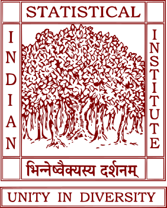
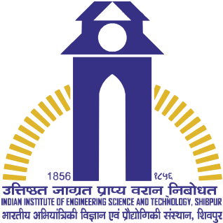

Doctor of Philosophy (Ph.D.)
Indian Statistical Institute, Kolkata, India
Currently working toward my Ph.D. at Indian Statistical Institute, Kolkata.
My primary research interests lie in natural language generation and deep learning. My current research focuses on the factual consistency and reliability of large language models (LLMs), particularly in the domain of data-to-text generation, where structured data are expressed in natural language.
I am also interested in scaling laws and in understanding how computational and data scaling influence the performance and reliability of large language models.
Loading news...

Indian Statistical Institute, Kolkata, India
Jadavpur University, Kolkata, India

Indian Institute of Engineering Science and Technology, Shibpur, India
Best way to reach me is via email!